It is confirmed to work in Chrome.
You are put in a world made completely of fibers. The world is amiss because of a feud between your two grandmothers, the ultimate creators, about which creation technique (crocheting or knitting) is the better method. It's up to you to manipulate the fibers around you to reconnect them, and demonstrate that crocheting and knitting can work together harmoniously.
The Team:
Stephanie "Beep boop beep" Gu spends most of her time making water sound effects during playtests. She spends a little bit of time designing levels and squashing Ethan's desire to feature creep.
Ethan "Positivity-Man" Sherbondy spends most of his time debugging despite his passion for insects. When Stephanie gets scary, he tends to escape from the nearest window.
Turner "Champion Bug Fixer" Bohlen makes up a third of the team's tallest members. He is in constant battle with the every single one of the movable block bugs.
Daniel "You are wavering precariously" Martelly's favorite activity is giving Lili piggy back rides. His second favorite activity is probably refactoring code and putting menu buttons in the wrong spot.
Lili "Does anyone have chocolate" Sun can usually be found accidentally buyingtoo much not enough yarn. When not creating game art, Lili is probably forgetting all the powers of 2.
Jeff "Leave me alone I have a thesis to do" Prouty crawled out of his hole and created all of the beautiful sounds that come from the game in just one day.
Ethan "Positivity-Man" Sherbondy spends most of his time debugging despite his passion for insects. When Stephanie gets scary, he tends to escape from the nearest window.
Turner "Champion Bug Fixer" Bohlen makes up a third of the team's tallest members. He is in constant battle with the every single one of the movable block bugs.
Daniel "You are wavering precariously" Martelly's favorite activity is giving Lili piggy back rides. His second favorite activity is probably refactoring code and putting menu buttons in the wrong spot.
Lili "Does anyone have chocolate" Sun can usually be found accidentally buying
Jeff "Leave me alone I have a thesis to do" Prouty crawled out of his hole and created all of the beautiful sounds that come from the game in just one day.
contact us at catbread @ mit.edu
Concept Art
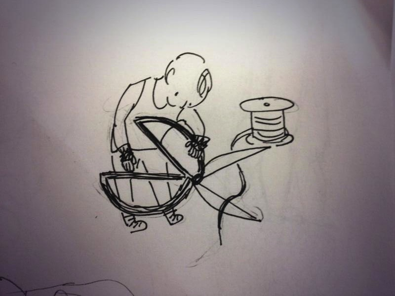One of the earliest player ideas
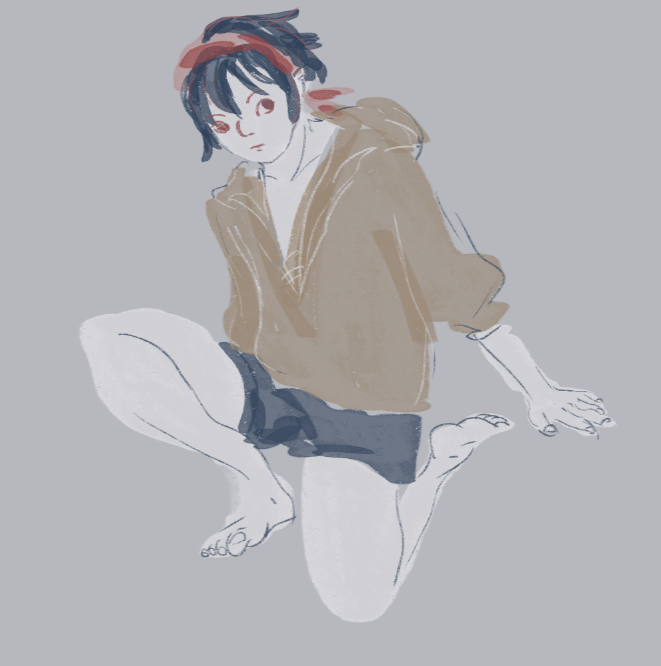
Fleshing out the player
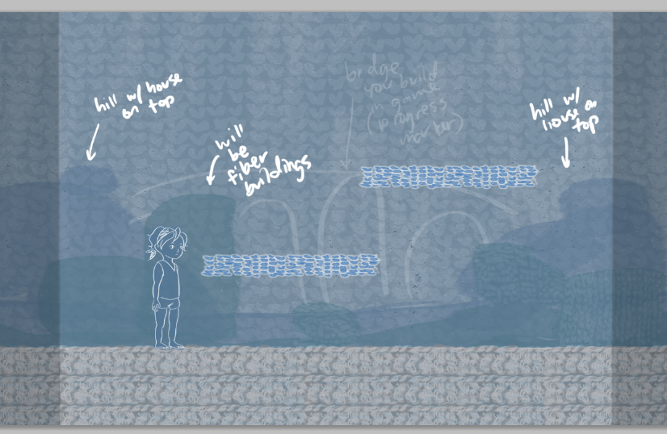
Fleshing out the look of the game
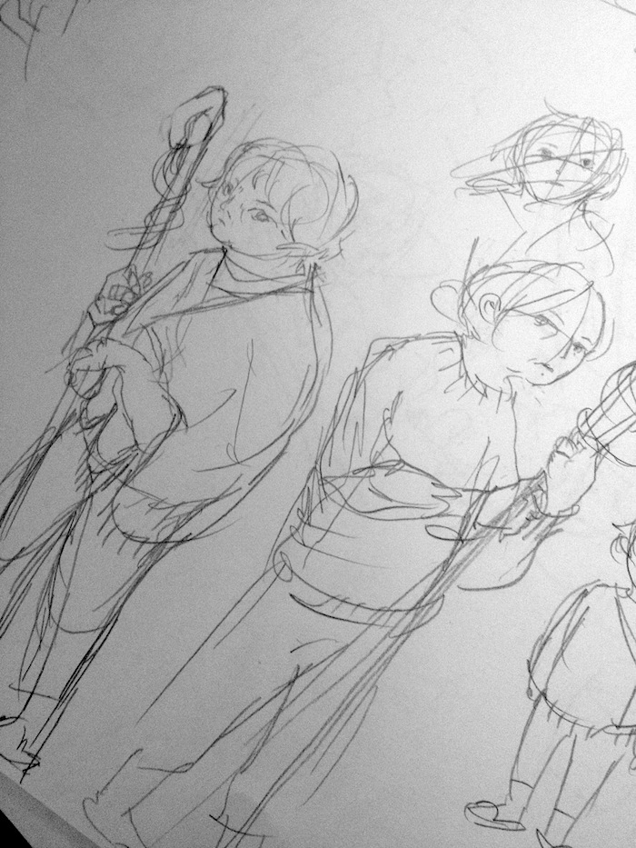
Figuring out how to draw grandmas
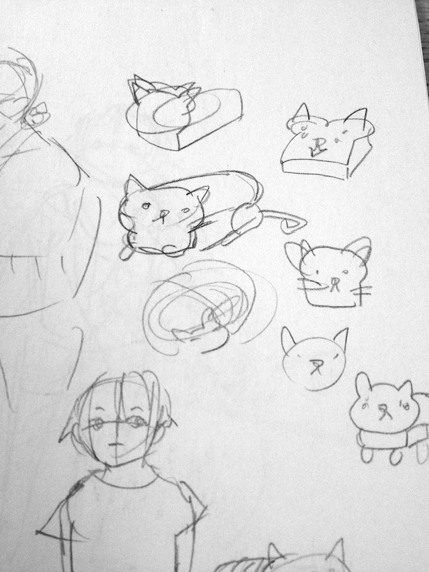
Some very important catbread art
Design Process
You can see our Greenlight Presentation slides here.You can see our Beta Presentation slides here.
You can see our Final Presentation slides here.
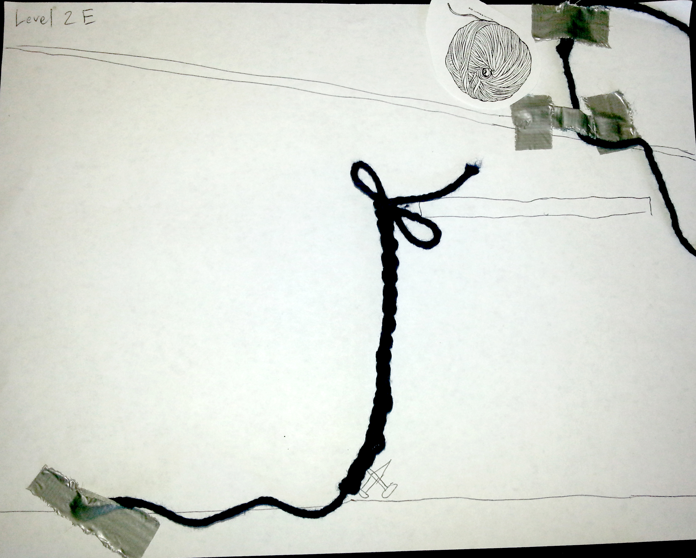
One of the earliest paper prototypes, designed by Daniel, where we attempted to use real string.
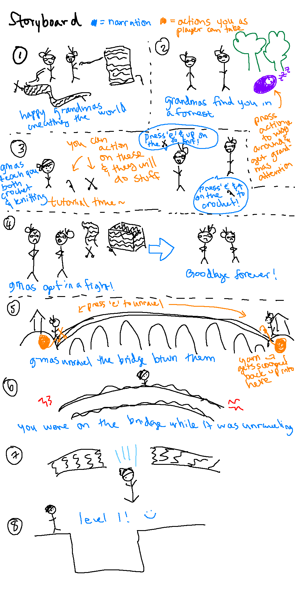
Storyboards for the game intro made by Stephanie.
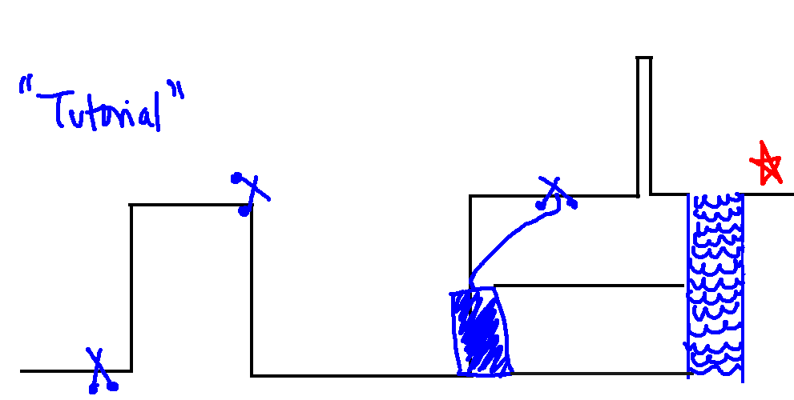
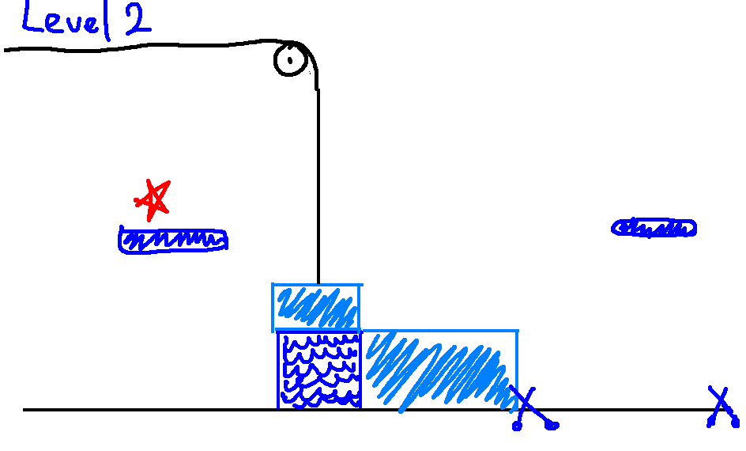
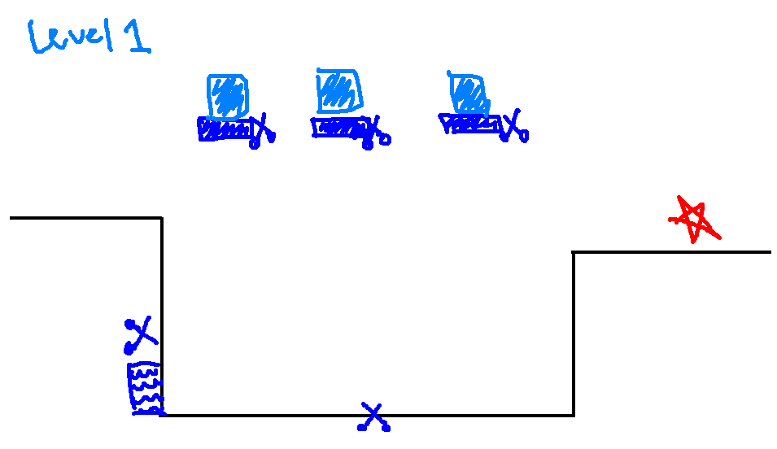
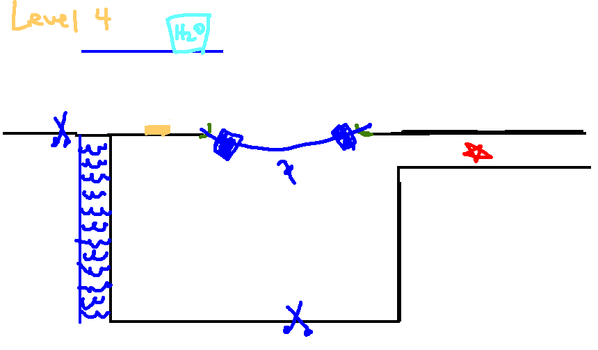
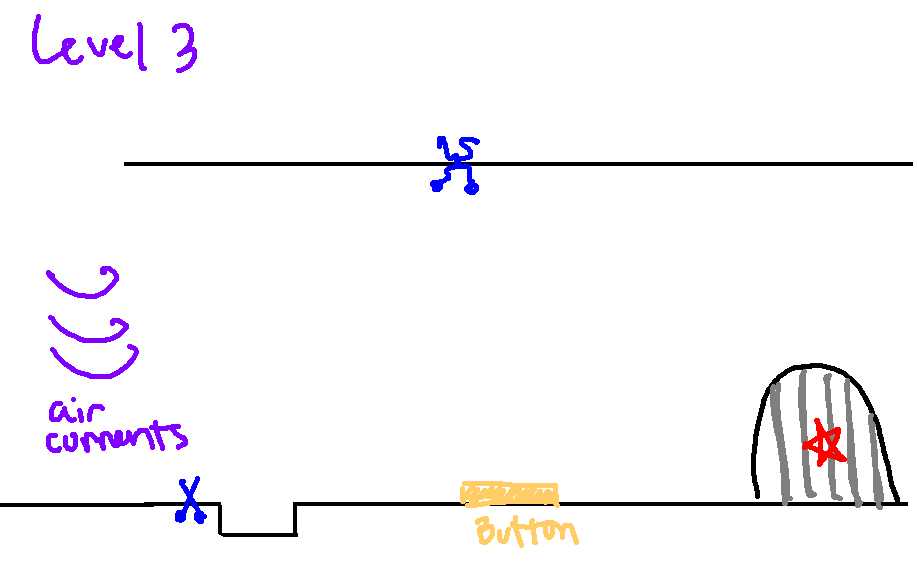
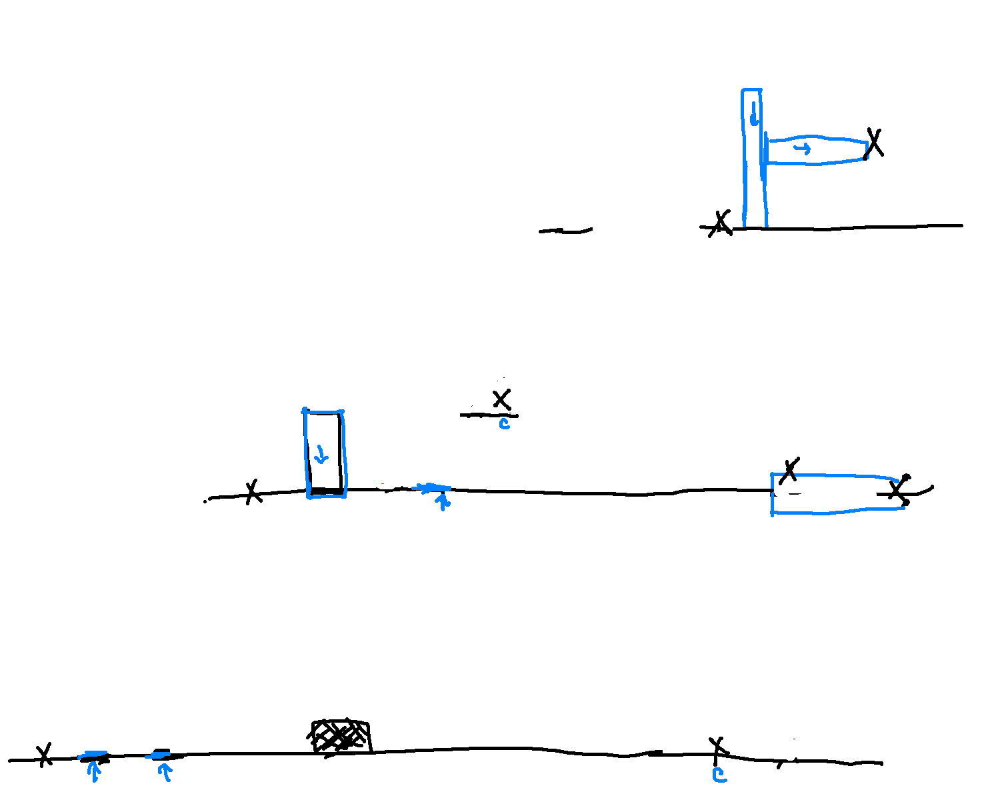
Levels designed by Stephanie.
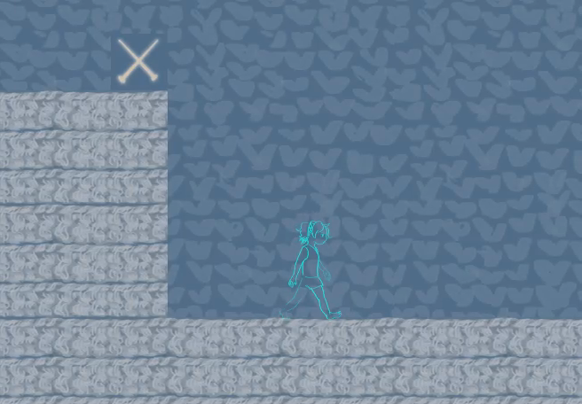
One of the first views of the player in the game
Alpha build
4/15/2014An early build of our game, with only one working level.
Many of the assets and player feedback were not in yet.
Instructions to play:
Press P a couple times to unpause the game and start playing.
Use arrow keys and space to jump.
Use E + up/down arrows over an item.
Use R to reset.
The goal is to jump off the other side of the level (into the abyss).
Play it here!
Beta Build
5/1/2014The build of our game with most of the assets and mechanics working and four playable levels.
You can see our Beta Presentation slides here.
Game notes: use H to reset a level, not R, as is stated in the instructions.
Play it here!